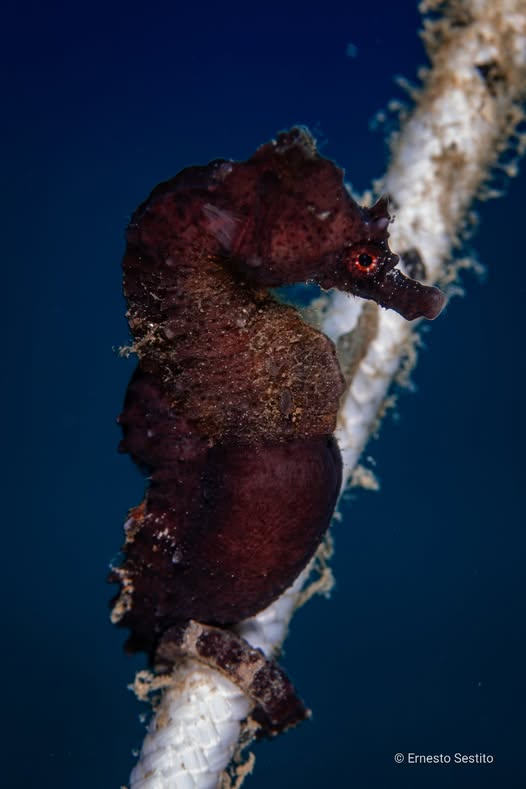
2-20m Shallow ReefMediterranean Seahorse
Hippocampus hippocampus
Clinging to rope and mooring lines in shallow reef habitat. A delicate master of camouflage found along the Calabrian coast.
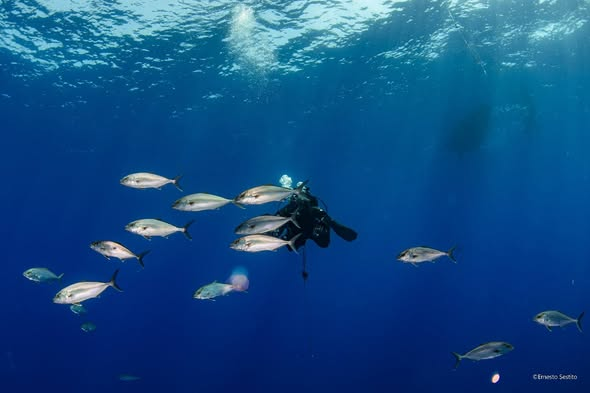
0-30m PelagicDiver with Horse Mackerel
Trachurus mediterraneus
Wide-angle backlit encounter with a swirling school of horse mackerel. The diver becomes part of the silver vortex.
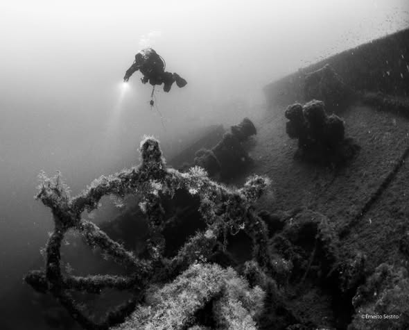
20-40m WreckShipwreck Detail
Helm gear with diver
Monochrome study of a sunken helm or gear mechanism, with a diver providing scale. Time and salt have sculpted new geometry.
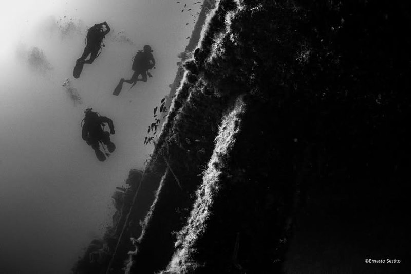
20-40m WreckWreck Silhouettes
Divers above wreck structure
Dramatic diagonal composition in black and white. Divers silhouetted above the skeletal remains of a sunken vessel.
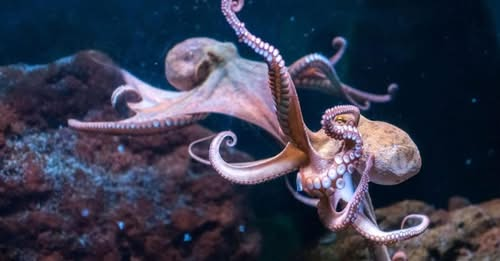
1-30m Rocky ReefCommon Octopus
Octopus vulgaris
Dynamic arm extension captured mid-movement. Eight arms of pure intelligence reaching across the rocky reef.
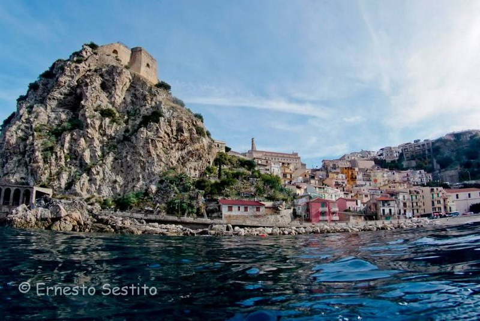
Surface CoastalScilla, Calabria
Over/under seascape
The Sestito homeland. Town of Scilla perched on its ancient promontory where Scylla and Charybdis once guarded the strait. An over/under perspective bridging two worlds.
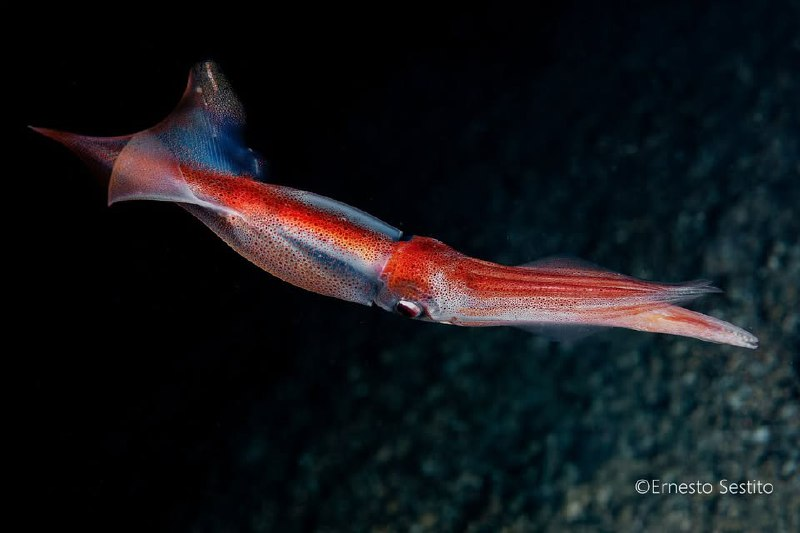
10-60m Pelagic / NightEuropean Squid
Loligo vulgaris
Studio-style portrait against pure black. A pelagic hunter frozen in sculptural perfection during a night dive.
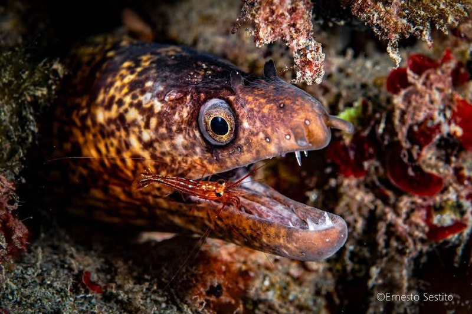
5-40m Rocky CaveMoray with Cleaning Shrimp
Muraena helena + Lysmata sp.
Symbiosis in action. A Mediterranean moray holds still while a tiny cleaning shrimp tends to its skin. Trust written in ancient code.
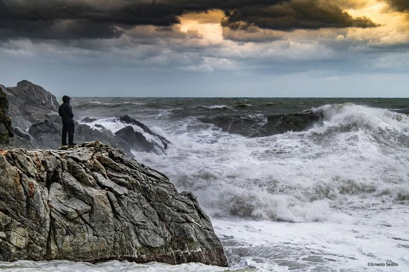
Surface CoastalStorm and Sea
Fine art landscape
A solitary figure stands on rocks as storm light transforms the coastline into a fine art tableau. The sea at its most dramatic and atmospheric.
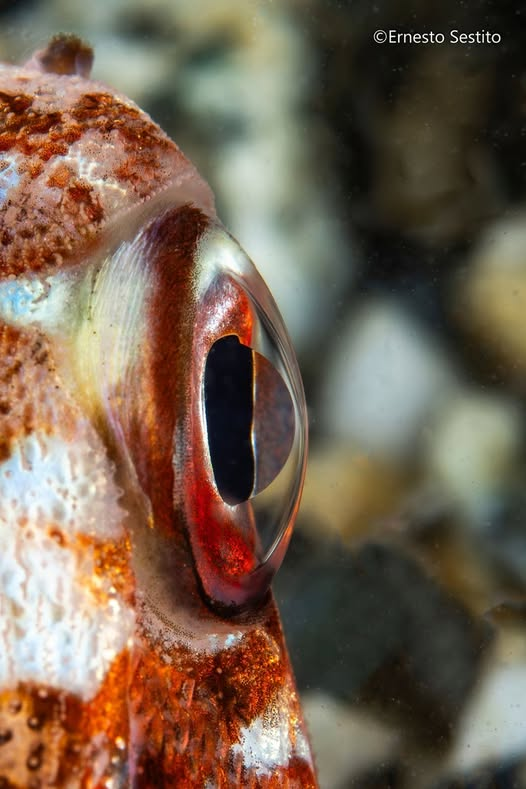
0-30m RockyOctopus Eye
Octopus vulgaris
Extreme macro into the eye of intelligence. An abstract, intimate portrait that reveals the alien beauty of cephalopod vision.
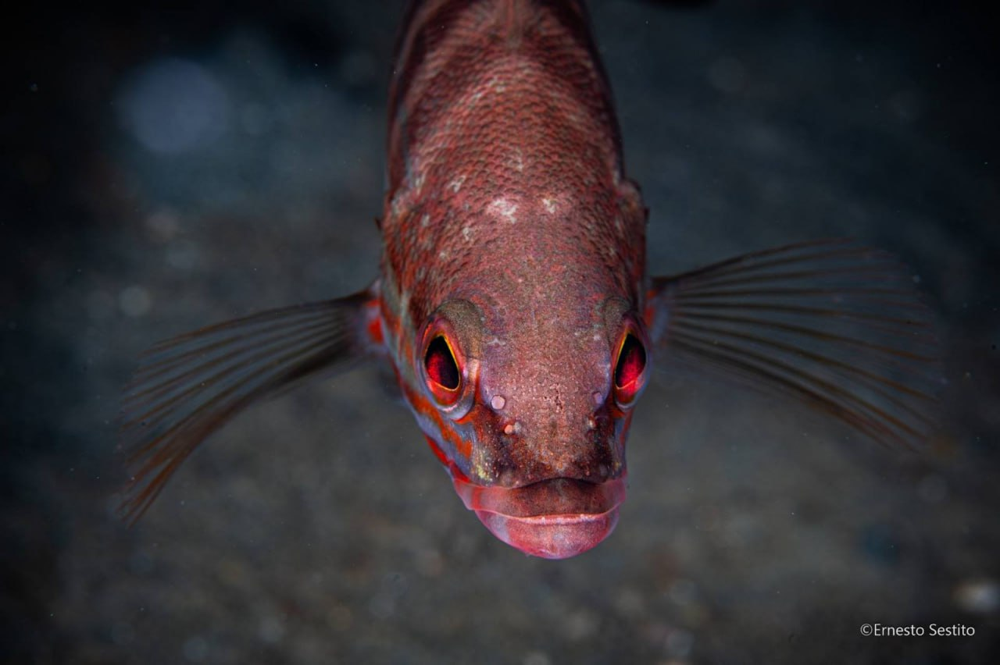
5-50m Cave / RockyCardinalfish Head-On
Apogon imberbis
Symmetrical confrontational portrait. The cardinalfish stares directly into the lens from the shadows of its cave refuge.
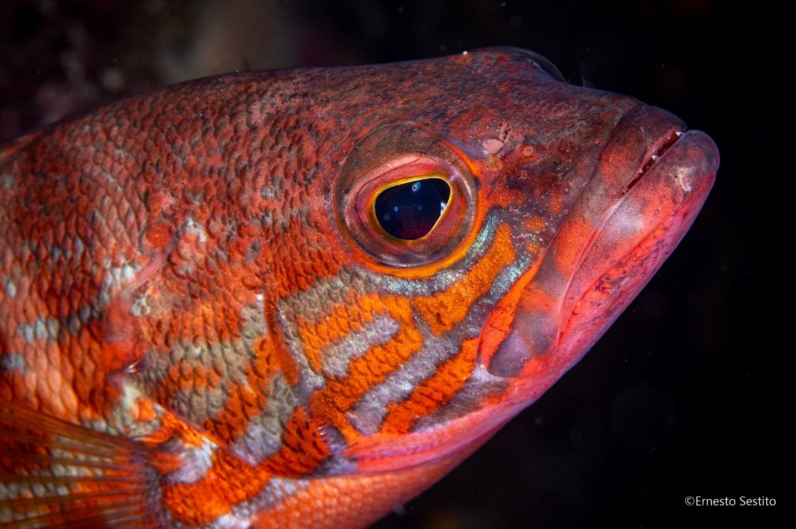
5-50m Cave / RockyCardinalfish Profile
Apogon imberbis
Vivid warm colours glow against the darkness. A profile study revealing the cardinalfish in its full chromatic splendour.
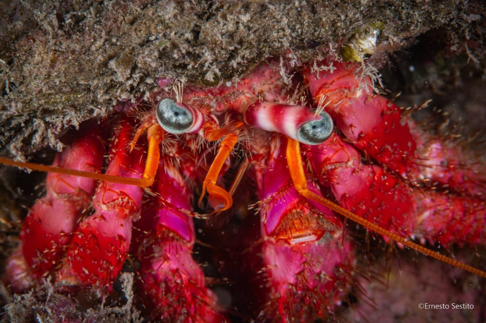
5-40m Rocky / SandyHermit Crab
Dardanus arrosor
Vivid magenta and orange macro portrait. A hermit crab peers from its borrowed shell, legs ablaze with impossible colour.
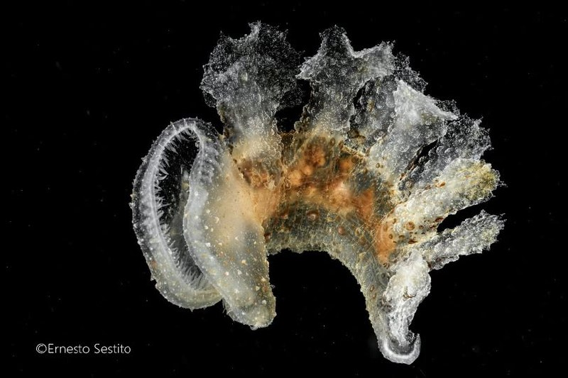
Pelagic MidwaterPelagic Tunicate
Salpa fusiformis
Translucent sculptural portrait of a drifting salp. A creature of glass and light, filtering the open ocean one pulse at a time.
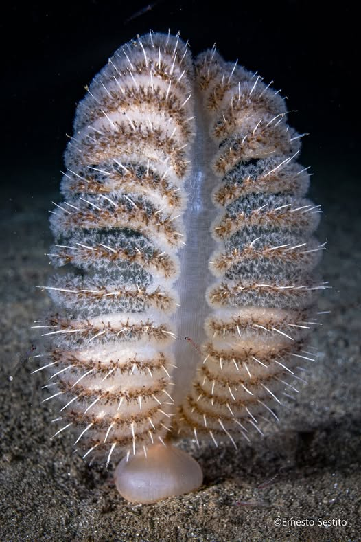
10-40m Sandy BottomSea Cucumber Feeding
Holothuroidea
Architectural symmetry in the feeding tentacles of a sea cucumber. An overlooked animal rendered monumental through the macro lens.
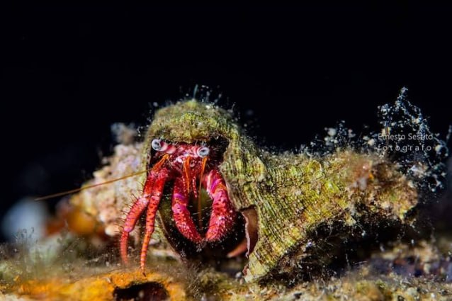
1-5m ⭐ FEATUREDTwo Worlds — The Signature Shot
Cotylorhiza tuberculata + Calabrian Castle
Half underwater, half above. A fried egg jellyfish pulses below while an ancient fortress looms above. Two worlds in one frame — the Oceanfloor philosophy captured in a single photograph. Mood: Two Worlds
Shipwreck Bow & Damselfish
Mediterranean Wreck Site
Encrusted hull emerging from sandy seabed, hundreds of damselfish swarming. B&W fine art. Mood: Monumental
The Coral Cathedral
Paramuricea clavata + Ascidiacea
Red gorgonian sea fans, blue tunicates, yellow sponges — an explosion of colour on a vertical wall. Mood: Wonder
The Pilgrim
Cratena peregrina
Red and white striped cerata, translucent body — a living jewel of the Mediterranean reef. Mood: Intimate
Into the Dark
Wreck Exploration
Torchlight cutting through murky water, dramatic silhouettes against rusted steel. B&W. Mood: Adventure
The Helm
Shipwreck Detail
Encrusted helm wheel still standing after decades, diver with camera approaching. Mood: Time
The Painted Lady
Felimare picta
Yellow-gold with brown marbling, ruffled mantle, laying eggs in a perfect spiral. Mood: Alien
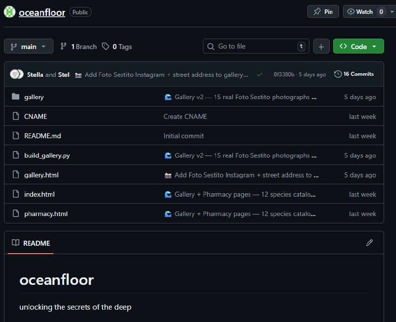
5-20m PelagicThe Ascent
Dasyatis pastinaca
Shot looking UP through the surface — the ray's white belly glowing against rippled light. © Ernesto Sestito. Mood: Ethereal
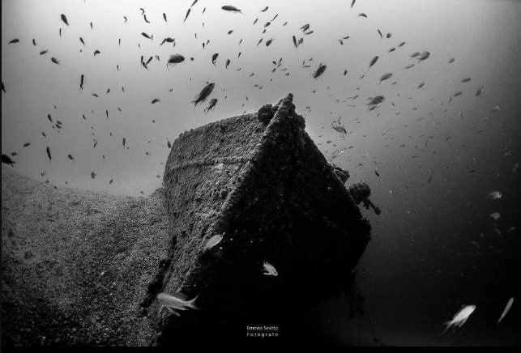
5-15m Shallow ReefThe Gardener
Aplysia fasciata
Marbled brown and white against black, with tiny fish hovering like satellites. A biological lawnmower. Mood: Alien
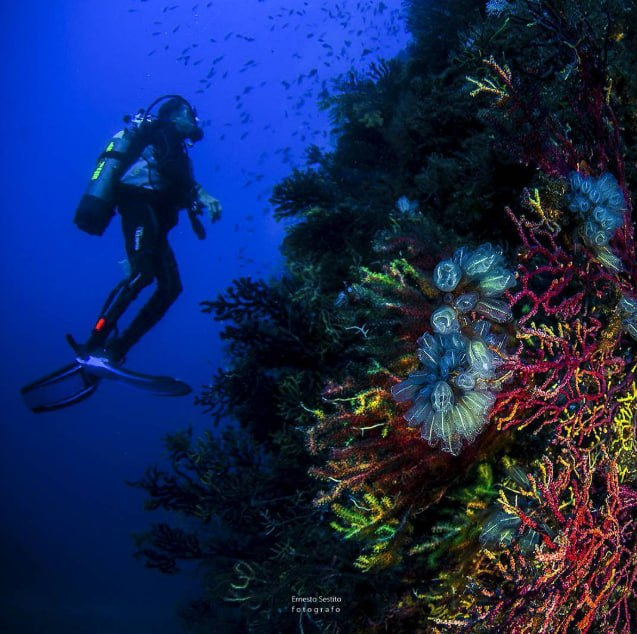
5-20m Shallow ReefThe Golden Sentinel
Hippocampus guttulatus
Long-snouted seahorse gripping a sponge, crown of cirri on the head. The Oceanfloor poster child. Mood: Ancient
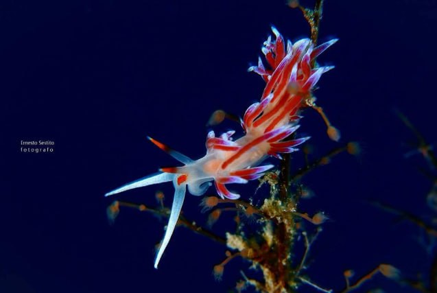
5-30m ReefEight Arms, One Purpose
Octopus vulgaris
Caught mid-movement — tentacles unfurled, suckers catching the light, web of skin visible between arms. Mood: Power
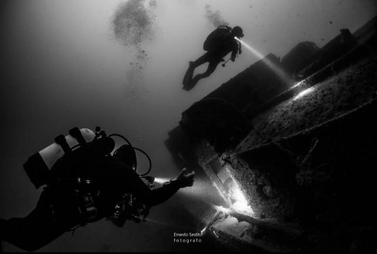
1-5m SurfaceThe Solar Bather
Cotylorhiza tuberculata
Golden dome from below, purple-tipped oral arms — the Mediterranean's living lantern. Mood: Heavenly
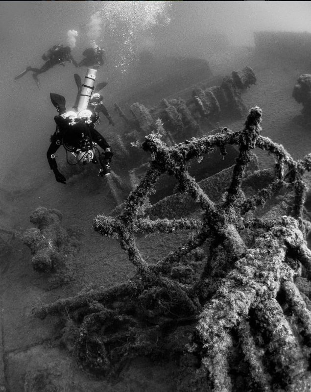
5-30m ReefThe Inherited Home
Dardanus calidus
Bright red claws, hairy legs, suspicious eyes peering from a borrowed shell. Pure personality. Mood: Cheeky
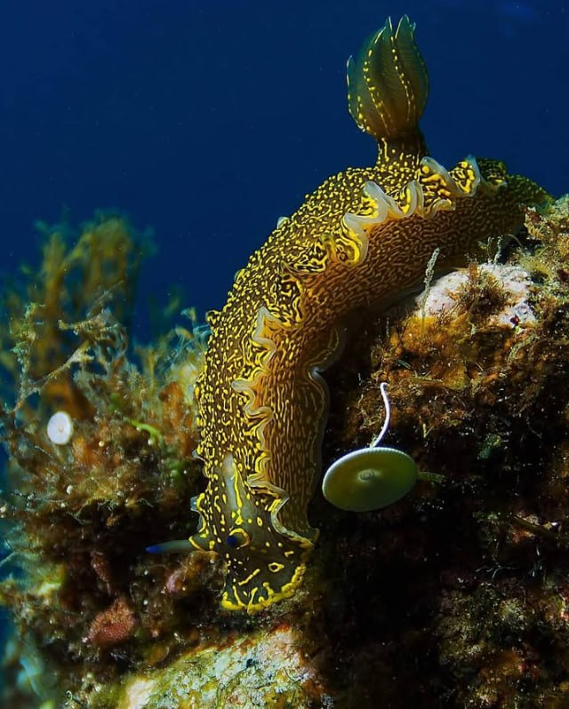
5-25m Reef WallLiving Fire
Astroides calycularis
Orange glow, translucent tentacles reaching into darkness. Fluorescence photography at its finest. Mood: Fire
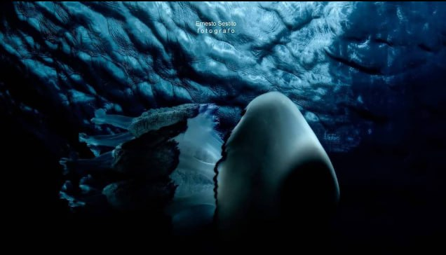
10-30m Sandy BottomThe Original Battery
Torpedo marmorata
Top-down shot — eyespot pattern looks like a face. Generates up to 200 volts of electricity. Mood: Guardian
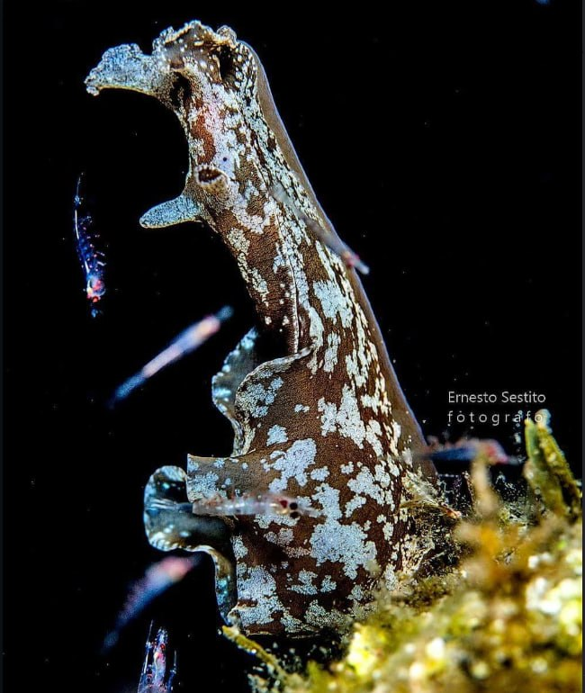
20-40m Deep ReefStars of the Deep
Anthias anthias
Suspended in black water, each one lit like a jewel. Like looking at stars in space. Mood: Cosmos
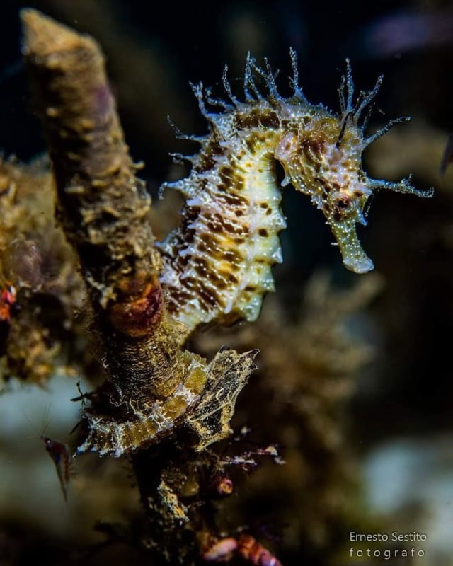
1-30m All DepthsThe Samurai
Hermodice carunculata
Venomous white bristles. Red and white segments like samurai armour. Mood: Danger
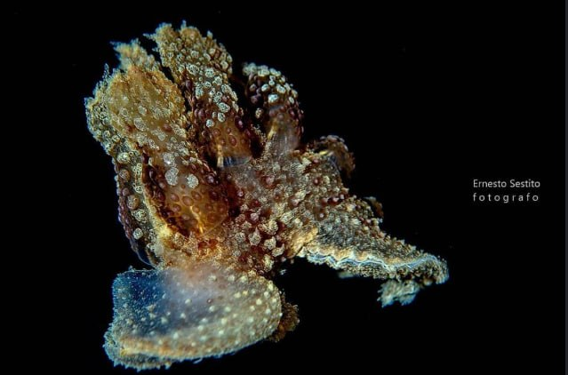
1-20mShallowUnderwater Ballet
Aplysia depilans
Mantle unfurled like a cape against pure black. Mood: Grace
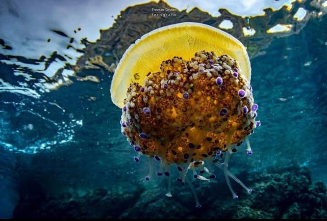
5-50mPelagicTwin Spirits
Seriola dumerili
Metallic green-blue apex fish cruising side by side. Mood: Freedom
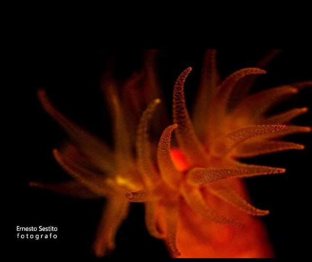
30-45mDeep WreckA Sense of Scale
Mediterranean Wreck
Massive hull over tiny photographer, fish swirling like stars. Mood: Humility
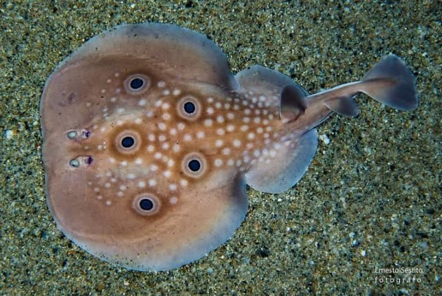
10-40mSandySacred Geometry
Cerianthus membranaceus
Tentacles radiating like a mandala. Abstract art that is alive. Mood: Sacred Geometry
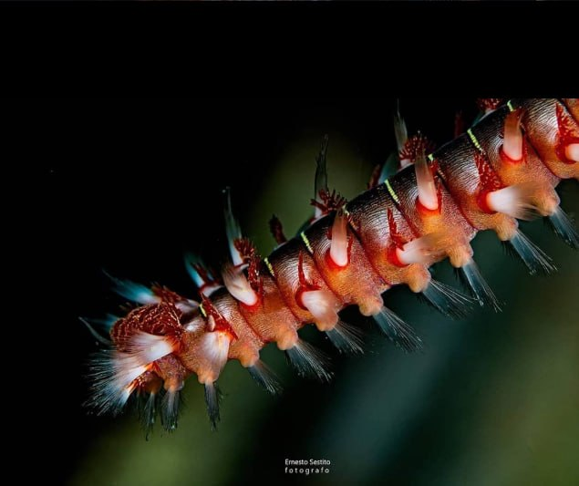
5-30mMid ReefThe Purple Queen
Flabellina affinis
Vivid magenta-violet, cerata fanned like a headdress. Mood: Royalty
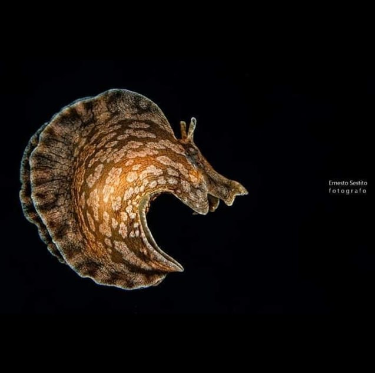
1-15mSurfaceThe Dreadnought
Rhizostoma pulmo
Massive translucent bell — looks like a spacecraft. Mood: Majestic
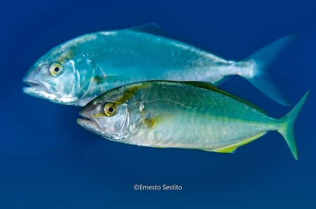
0.5mSurfaceThe Long Game
Caretta caretta
Crystal water, mirror reflection. Pure emotion. Mood: Soul
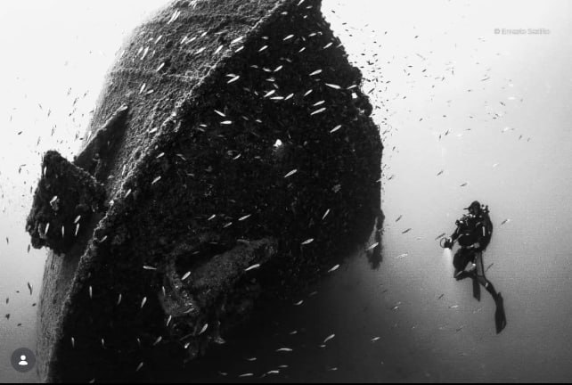
10-50mMid WaterPesce San Pietro
Zeus faber
St. Peter's thumbprint on its flank. Mood: Ancient
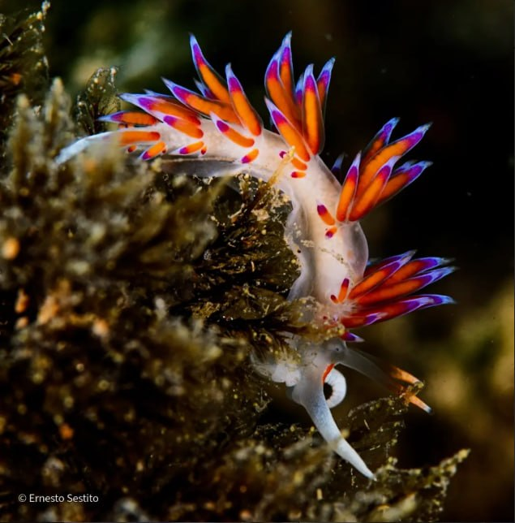
1-5mSurfaceEntering the Atmosphere
Cotylorhiza tuberculata
Golden dome against rippled light. Like a UFO. Mood: Celestial
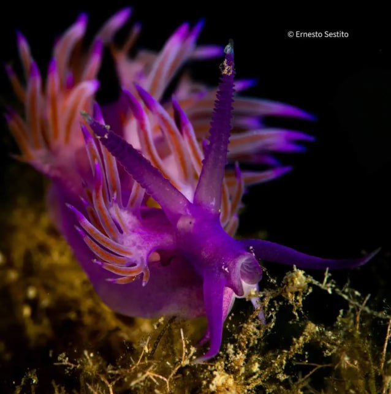
10-50mMid WaterThe Abyssal Portrait
Zeus faber
B&W head-on. Art photography. Mood: Primordial
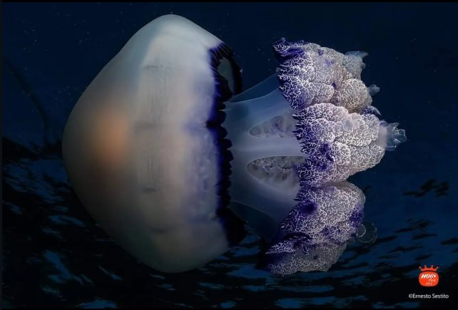
Above🦋 Air SkyThe Air Sky
Anthocharis cardamines
Two skies, one artist. Mood: Tenderness
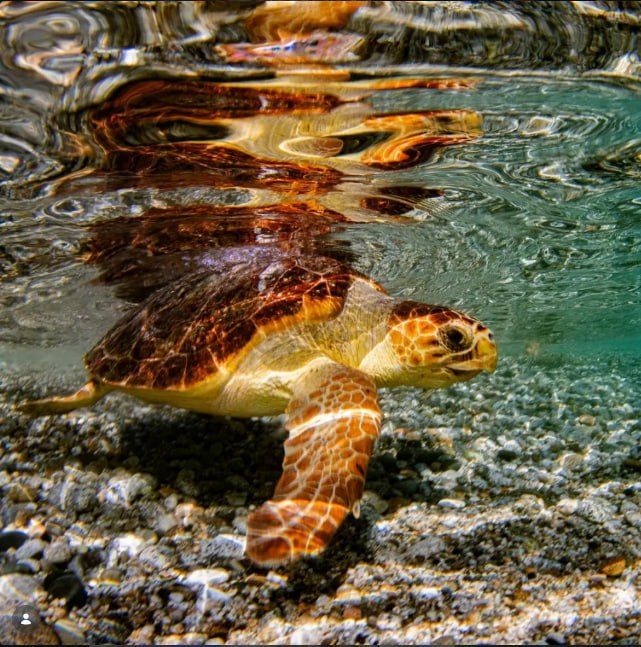
5-20mShallow ReefResilience
Hippocampus hippocampus
Crimson seahorse clinging to fishing net. Adaptation and survival. Mood: Resilience
Photography
Ernesto Sestito · Foto Sestito
Corso Umberto I, 172 · 88068 Soverato (CZ) · Calabria, Italy
Multi-generational photography studio · Figlio d'arte
📷 @ernestosestitofotografo
Underwater · Marine Life · Fine Art · Landscape · Weddings
Interested in contributing? StellaB@sestito.com
Gallery expanding · New expeditions documented regularly · Image submissions welcome
• 47 photographs catalogued